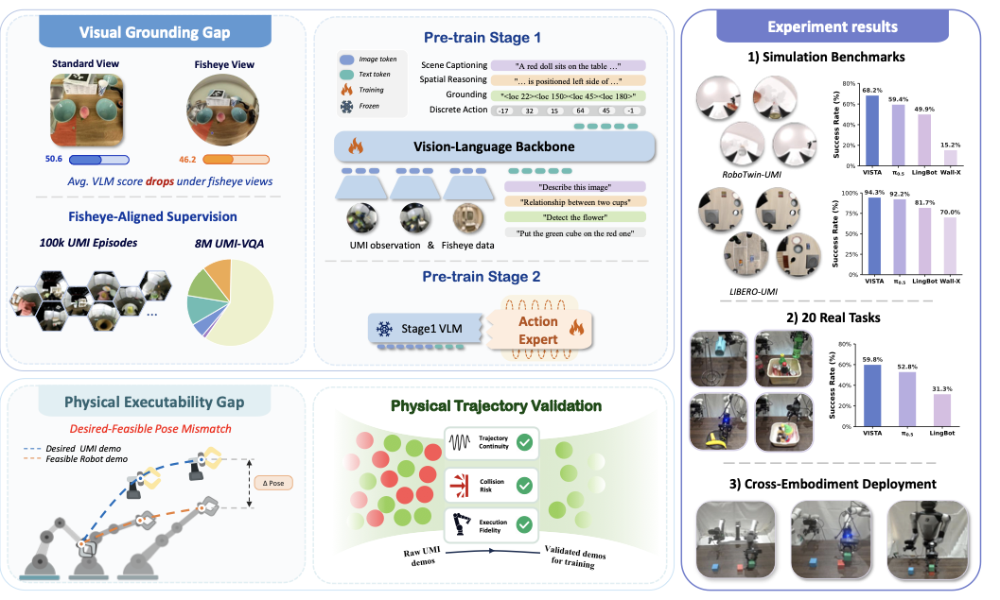
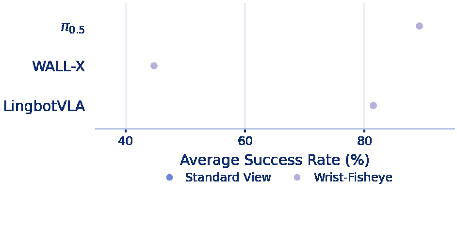
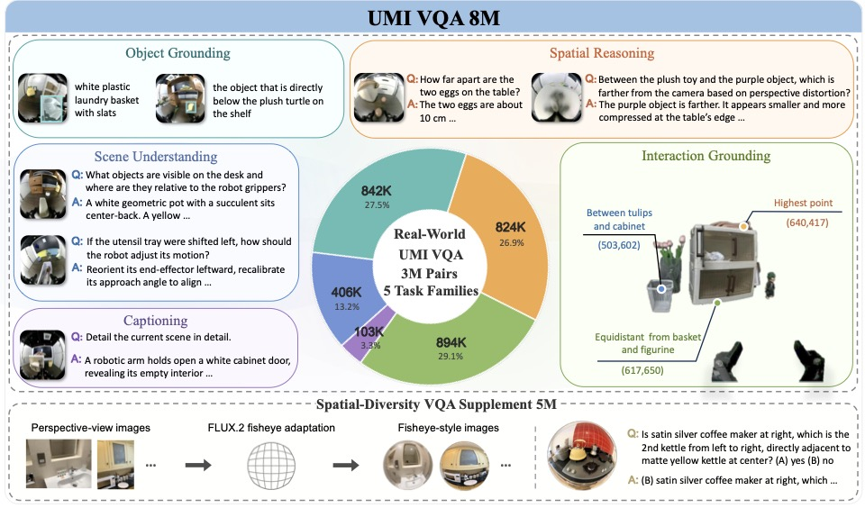
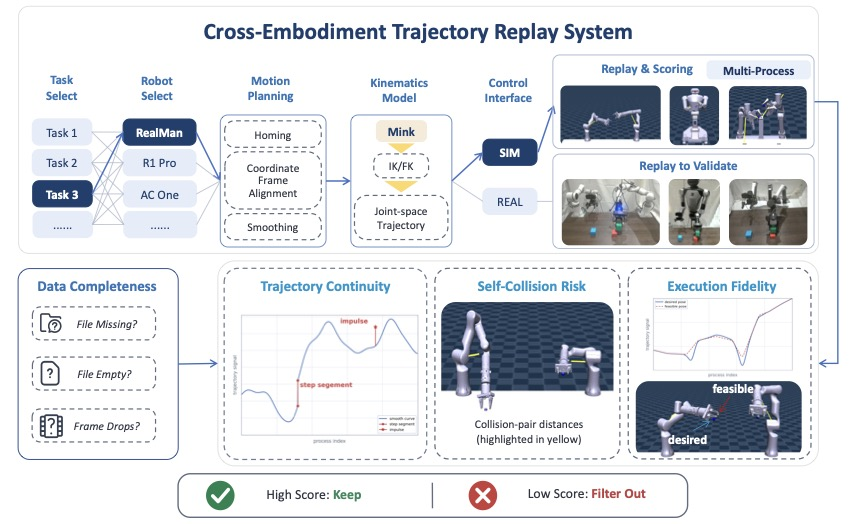
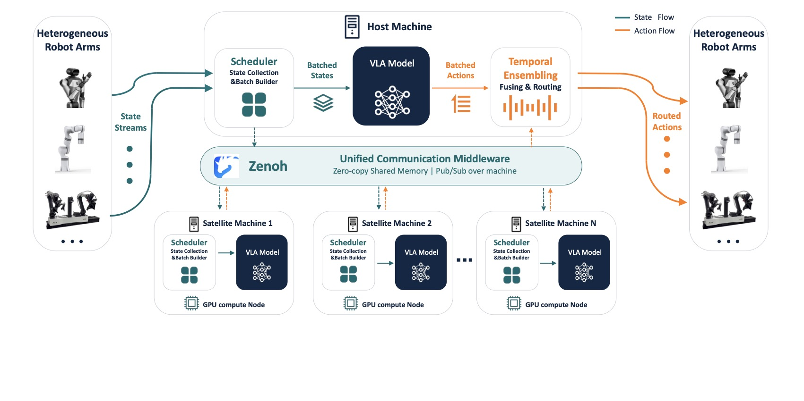
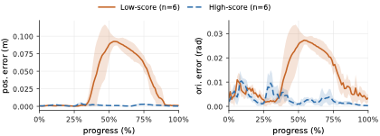
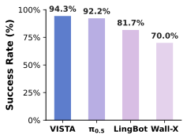
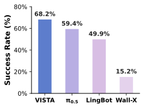
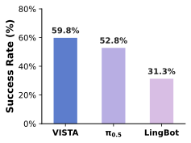

Video · Main view
待上传 · 主视角 / 第三人称
VLM visual grounding
- Pinhole projection
- Global spatial cues
✅ Matches VLM pretraining
Vision-Language-Action (VLA) models, trained via score-matching objectives such as flow matching and diffusion, have shown strong performance on robotic manipulation by learning from large-scale, multi-modal demonstrations. However, despite supervised finetuning (SFT), we observe a critical inference-time fragility: the finetuned policy distribution remains broader than the narrow subset of stable, successful behaviors required for downstream tasks. This residual mass exhibits as large variance in success rates under different sampling noises. We frame this issue as an inference-time support mismatch problem and propose TACO, a model-agnostic test-time scaling (TTS) framework that operationalizes the anti-exploration principle from offline reinforcement learning (RL). TACO samples multiple candidate action chunks from the VLA and selects the one with the highest estimated pseudo-count. Intuitively, the pseudo-count measures how well a candidate is supported by the demonstrations. We show that, under a support-regularized offline RL formulation, this maximum pseudo-count selection corresponds to a gradient-free, conservative one-step policy improvement over the sampled action set. This steers the policy toward the stable success mode without updating the VLA parameters or performing unstable training-time RL optimization. A Context KV Caching mechanism further makes this scaling practical, achieving 3.89 Hz during inference with 16 candidates, compared to 1.20 Hz with naive parallel inference. Extensive experiments across four simulation benchmarks, including RoboTwin2.0, RoboTwin, LIBERO, and SimplerEnv, as well as a dual-arm real-world platform, demonstrate that TACO improves inference stability and task success rates in downstream VLA adaptation.

Standard VLA and VLM pipelines are built on relatively global, pinhole-perspective supervision. UMI instead records wrist-mounted fisheye views that are local, gripper-centric, and visually far from this pretraining regime.
待上传 · 主视角 / 第三人称
VLM visual grounding
✅ Matches VLM pretraining
待上传 · 手腕鱼眼 · 155° FOV
Fisheye view in UMI
❌ Out-of-distribution for standard VLMs
Perception degradation under fisheye observations

Raw human demonstrations inherently lack awareness of target robot constraints, such as joint limits, workspace boundaries, and self-collision risks. Training VLA models on this unconstrained data causes the robot to learn physically infeasible actions, inevitably leading to systematic deployment failures.
To visually demonstrate this issue, we analyzed the execution of three representative tasks. Unconstrained trajectories often suffer from severe tracking errors. The curves below compare the position and orientation deviations between successful and failed trajectories, showing exactly how these physical limits disrupt the task.
UMI-Vista converts raw UMI demonstrations into VLA-ready supervision through four compact stages: align perception to wrist-fisheye views, filter trajectories by physical executability, train the policy with staged vision-action learning, and deploy it across heterogeneous robot arms.
UMI-VQA teaches the visual backbone to understand distorted, gripper-centric wrist views using 8M vision-language samples from real UMI frames and spatial-diversity edits.

Each trajectory is replayed on target embodiments and filtered before training, so the policy learns motions that are visually grounded and physically executable.

Jointly learns fisheye visual grounding and discrete action-token prediction.
Adds continuous control while preserving the aligned vision-language backbone.
Adapts the full policy to validated downstream data for each target embodiment.
A pure-Python Zenoh runtime aggregates robot state streams, runs batched GPU inference, and routes temporally ensembled action chunks back to each arm.

| Training Setting | Task 1 | Task 2 | Task 3 | Overall |
|---|---|---|---|---|
| Action-only π0.5 | 45.0% | 50.0% | 40.0% | 45.0% |
| π0.5 + Standard-view VQA | 20.0% | 20.0% | 55.0% | 31.7% |
| π0.5 + UMI-VQA | 40.0% | 55.0% | 70.0% | 55.0% |
Success rates are reported as percentages over 20 trials per task. Task 1, Task 2, and Task 3 correspond to Stack Side Cubes on Center Cube, Stack Paper Cups, and Stack Pen Holders. Compared with action-only training and standard-view VQA supervision, UMI-VQA provides fisheye-aligned visual grounding and gives the best overall success rate.

| Training Subset | #Demos | RealMan | ACone | R1Pro | |||
|---|---|---|---|---|---|---|---|
| Avg. Score | Suc. Rate | Avg. Score | Suc. Rate | Avg. Score | Suc. Rate | ||
| Selected subset A | 50 | 35.50 | 0.00 | 21.19 | 0.00 | 84.07 | 0.80 |
| Selected subset B | 50 | 99.21 | 0.65 | 59.57 | 0.55 | 76.40 | 0.75 |
Left: trajectory replay error under RealMan constraints, where larger post-grasp position/orientation deviation indicates physically infeasible behavior. Right: stapler-placement results over 20 trials on RealMan, ACone, and R1Pro. Higher validation scores generally align with higher deployment success, while the same UMI subset can behave differently across embodiments.



Task demonstrations on 20 UMI-collected manipulation tasks
Close Laptop and Place Mouse
Place Dolls into Box
Take Dolls out of Box
Place Stapler on Cabinet
Stack Side Cubes on Center Cube
Sort Cubes by Color into Tray
Retrieve Toast from Toaster
Pick Target Fruits from Bowl
Put Doll into Drawer and Close
Open Drawer
Organize Dolls
Place Bun into Rice Cooker and Close
Arrange Flowers
Place Drink into Box
Hang Mug on Rack
Stack Pen Holders
Pour Chips from Bowl to Plate
Pick Plum from Cluttered Fruits
Stack Paper Cups
Place Fruits